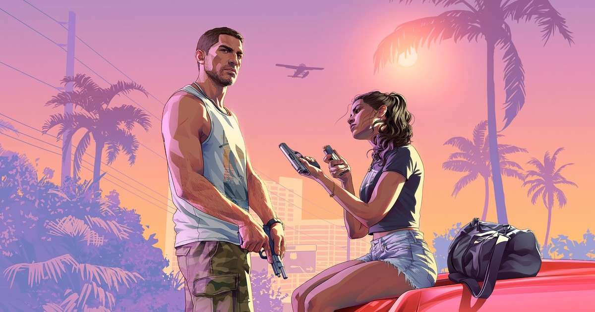

GTA 6 hides a Mario and Luigi Easter egg — and you have to get high to find it
Deep in the woods of Lummox County, a bong, a floating block, and a familiar jingle hide two caps for Jason and Lucia — a nod to Nintendo's most famous plumbers.

Disclosure: this post contains affiliate links. I earn a commission on qualifying purchases.
GTA 6 has been out less than a week and players are already finding secrets Rockstar never mentioned. The best one so far is a nod to Nintendo hiding in the woods of northern Leonida: a Super Mario Bros. Easter egg that only appears after you smoke a bong, climb some ruins, and jump into a block that isn't there.
X user xGarbett shared the discovery on November 23, and Kotaku's Zack Zwiezen went to the spot himself to confirm it works. It does — with one wrinkle. Zwiezen couldn't get Jason to break the block by jumping into it, so he shot it instead, and the hats still popped out.
How to find it
The egg is in Lummox County, at the Lawton Co. Paper Mill in Moreau, just north of Mount Kalaga National Park. You'll know you're in the right place when the Water Wheel Meditation spot marker pops up nearby.
1. Head to the ruined brick building by the river, near the water wheel
2. Find the purple tarp with a bong sitting on it — check the lock box beside it first
3. Smoke the bong and wait for the trip to kick in
4. Look up: a plume of white smoke rises from one of the columns, and a translucent block floats above it
5. Climb the ruins to the top, stand underneath the block, and jump into it — or shoot it, if the jump won't connect
A jingle plays, the block bursts in a puff of smoke, and two hats drop to the ground.
What you get
A red cap with a "J" for Jason and a green cap with an "L" for Lucia — the initials sitting exactly where Mario's "M" would be. Both can be worn after you pick them up; Zwiezen grabbed both, called Lucia, and headed to a clothing shop to put them on. The lock box by the tarp holds $400, so the trip pays for itself.
It is a joke with a straight face: Mario and Luigi are Nintendo's most famous duo, and Jason and Lucia are Rockstar's. The game doesn't wink at it any harder than the hats themselves.
Leonida is full of this stuff
The Mario egg is one discovery in a map that keeps giving them up. Kotaku's same report notes a separate secret that lets players travel back in time to Vice City on the PS2, and players have already catalogued everything from a dog riding a jet ski to a talking parrot that points you toward hidden cash. Four days after launch, the Easter egg hunt is its own game inside the game — and the Mario hats are the prize everyone will be chasing first.
Sources: GTA 6 Has A Super Mario Bros. Easter Egg, And It's A Trip (GameSpot) · GTA 6 Includes A Mario And Luigi Easter Egg (Kotaku) · Super Mario Bros Easter egg (Dexerto) · GTA 6 Hides An Adorable Mario & Luigi Easter Egg In Its Massive World (Nintendo Life) · GTA 6 has a hidden Mario and Luigi Easter egg that lets Jason and Lucia dress like Nintendo's iconic plumbers (TweakTown)
Gear up: Razer — mice, keyboards, headsets and laptops.